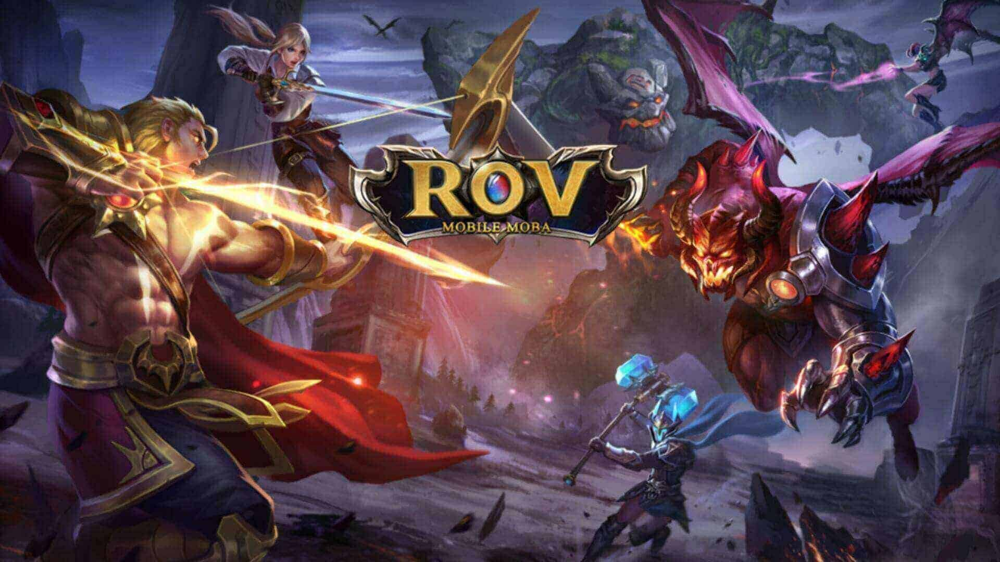
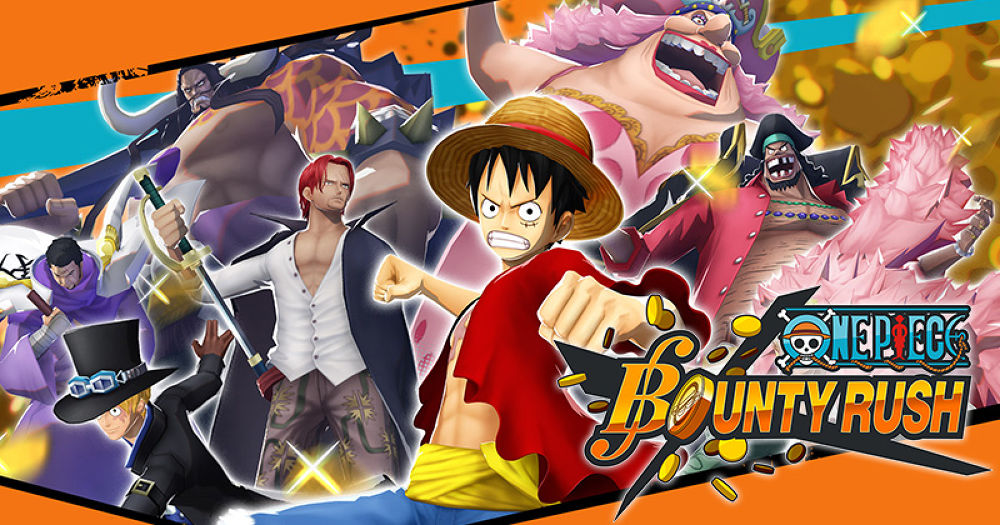

1.Arena of Valor
เกม RoV นั้นมีรูปแบบการเล่นคล้ายเกม MOBA บน PC ทั่วไป ที่จะให้ผู้เล่นเลือกฮีโร่มา 1 ตัวไปทำการต่อสู้แบบ 5 ต่อ 5 กับฝั่งตรงข้าม
ตัวเกมมีมุมมองบุคคลที่ 3 โดยมีเป้าหมายหลัก ๆ คือการทำลายฐานหลักของศัตรูให้ได้ ในแผนที่จะมีองค์ประกอบต่าง ๆ ทั่วไป
เช่นครีปที่เดินมาในเลน, ครีปป่าอย่างบัฟฟ้า และบัฟแดง, ป้อมปราการเลนละ 3 ป้อม (มีทั้งหมด 3 เลน)
ด้วยความที่เกม RoV นั้นต้องเล่นในมือถือทำให้ไม่จำเป็นต้องกดคลิกที่ฮีโร่อีกฝั่งเพื่อทำการโจมตี แต่จะมีปุ่มโจมตีให้กดเลย
เมื่อกดปุ่มโจมตีจะทำการโจมตีศัตรูที่เลือดน้อยที่สุด หรือใกล้ที่สุดแทน (แล้วแต่ตั้งค่า)
รวมทั้งสามารถเคลื่อนที่ได้ด้วยการใช้นิ้วสัมผัสตรงมุมล่างซ้ายของจอ (มีปุ่มวงกลม) และลากได้ตามใจว่าอยากเคลื่อนที่ไปทางไหน
โดยหลัก ๆ แล้ว เป้าหมายในเกมนี้คือการทำลายป้อมของศัตรูไปเรื่อย ๆ เพื่อที่จะเข้าไปทำลายฐานหลักของศัตรูให้ได้
โดยจะมีวิธีการเอาชนะที่แตกต่างกันแล้วแต่กลยุทธ์กันออกไป
2.ONE PIECE Bounty Rush
ONE PIECE Bounty Rush คือเกมมือถือแนว Action แบบ Real-Time (ผู้เล่นสามารถเลือกบังคับทิศทางเดินและต่อสู้ได้อย่างอิสระ)
โดยนำเสนอเรื่องราวผ่านโลกของการ์ตูน One Piece และอยู่ภายใต้การดูแลของค่ายเกมที่ทำเกมจากการ์ตูนดังมามากมายนับไม่ถ้วนอย่าง
BANDAI NAMCO Entertainment ตัวเกมประกอบไปด้วยคอนเทนต์มากมายให้ผู้เล่นได้เลือกทำ
พร้อมกับตัวละครที่มากมายมีตั้งแต่ภาคแรกจนไปถึงภาคล่าสุดอย่างศึกวาโนะที่ปะทะกับ
4จักรพรรดิไคโดเลยทีเดียว เรียกได้เลยว่าหากคุณเป็นแฟนวันพีชรับรองว่าจะต้องฟินแตกกันไปตาม ๆ กันแน่นอน
